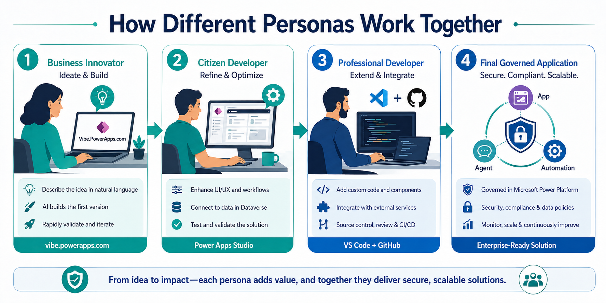
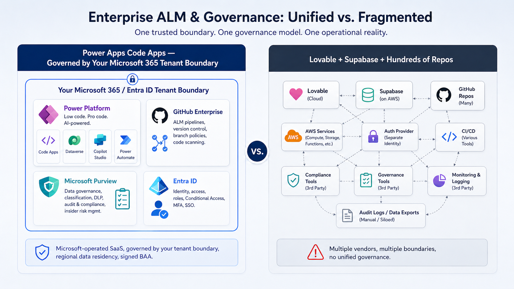
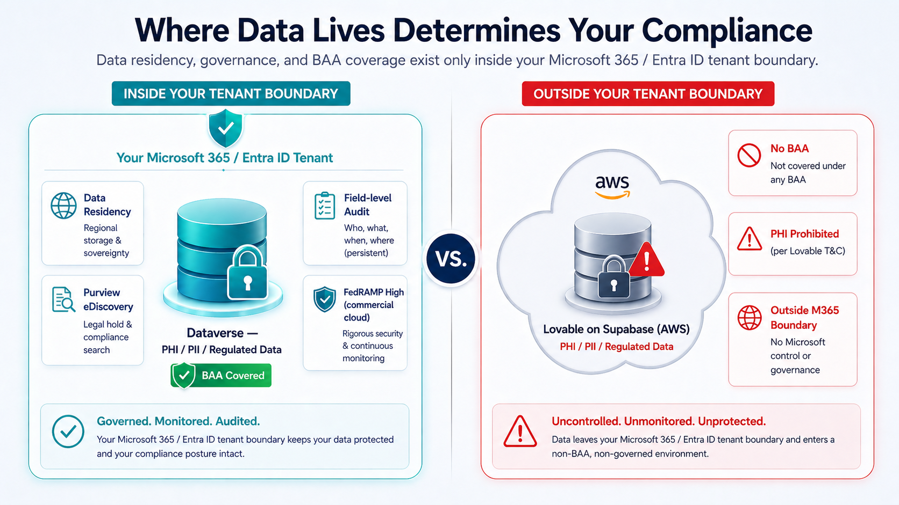
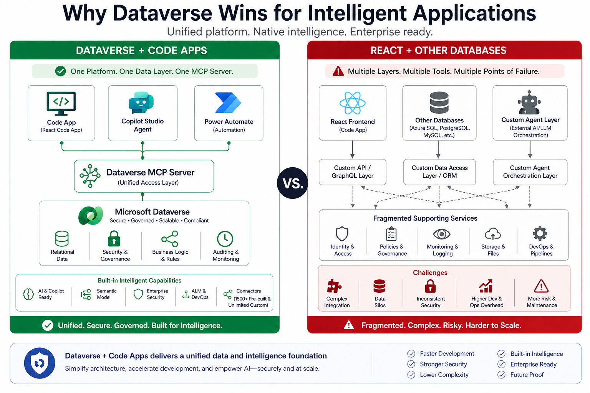
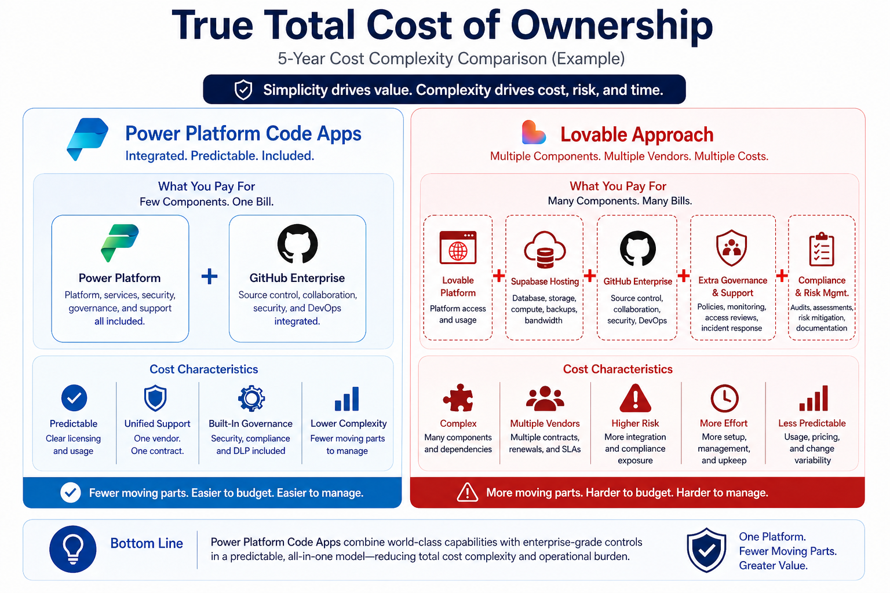
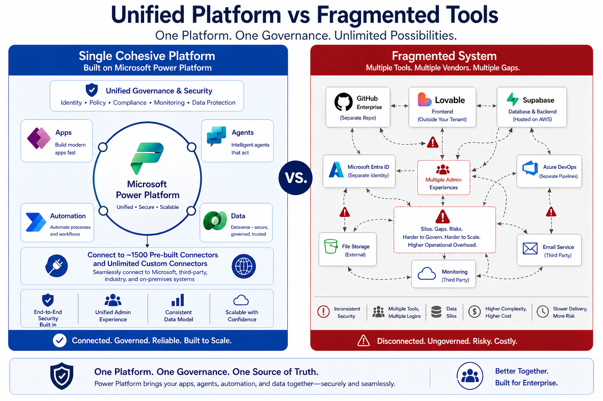

Why a governed, compliant, agent-ready foundation matters at 10,000 users, ~1,000 makers, and especially when PHI is in play. The AI coding tool is just the hammer. The platform is the house.
~1,000 makers self-serving on a governed platform — without 1.5–2.5 extra FTEs to babysit it.
Everything inside the customer's own Azure tenant under a signed Microsoft BAA. Lovable's own terms forbid PHI.
Dataverse exposes tables, relationships, and security to agents in a single connection. Azure SQL does not.
Code Apps creates a single, governed pipeline where one artifact matures — without rewrites — from idea to enterprise-ready solution. Each persona adds value, and together they deliver secure, scalable applications.
Important: these personas are roles, not necessarily different people. The same human can grow through every stage — a domain expert who starts in vibe.powerapps.com can absolutely end up in VS Code with GitHub Copilot, shipping through CI/CD. The platform meets each person at their current skill level and grows with them.

vibe.powerapps.com
Power Apps Studio
VS Code + GitHub
copilot-instructions.mdEnterprise-Ready Solution
With Code Apps, admins configure ALM pipelines and Managed Environments once. After that, makers ship to dev → test → prod with proper promotion, DLP, and approval gates baked in.

For any organization handling PHI, this is not a feature comparison. It is a contractual and regulatory boundary.

These are not interpretations. They are verbatim from Lovable's published policies — and they are unambiguous.
Terms & Conditions lovable.dev/terms"You agree not to upload, input, or otherwise provide any protected health information under HIPAA, or any other sensitive categories of data… Our Services are not designed to handle that type of data, and we disclaim all responsibility if you choose to submit it."
Data Processing Agreement · Section 8 lovable.dev/data-processing-agreement"The Customer shall not provide any data to Lovable which is classified as sensitive. For the avoidance of doubt, the Customer agrees not to upload… any protected health information under HIPAA…"
Privacy Policy lovable.dev/privacyExplicitly warns against uploading sensitive health data.
Microsoft signs a BAA and keeps all data inside your own Azure tenant. Lovable does not. This is written directly in their own legal documents — linked above. For any organization handling PHI, this single fact ends the conversation.
In the era of intelligent agents, the data layer must speak the agent's language. Dataverse ships a native Model Context Protocol (MCP) Server. Azure SQL does not.
Code Apps cover internal users in Entra ID. Power Pages BYOC covers everyone else — customers, patients, partners, suppliers — with the same governed Dataverse foundation.
Bring a React single-page app and host it on Power Pages' secure runtime — no rebuild required.
B2C, social, and external Entra identities — without giving outside users tenant licenses.
Row, column, and table-level security apply identically to external users — no parallel auth model.
Azure SQL is a database. Dataverse is a governed business application platform. The difference shows up in nearly every dimension that matters at enterprise scale.

| Capability | Dataverse | Azure SQL |
|---|---|---|
| Row & column security | Built-in security roles, business units, hierarchical, field-level | Custom-built with views, RLS policies, and app-tier code |
| MCP Server | Native — agents auto-understand schema and security | None — every agent integration is hand-rolled |
| Agent intelligence | Copilot Studio + M365 Copilot speak Dataverse natively | Requires bespoke prompt engineering and middleware |
| Business logic location | Centralized in the platform: business rules, plug-ins, flows | Scattered across app code, stored procs, triggers, and services |
| ALM & solution packaging | First-class solutions carry schema + UI + logic together | DACPAC + custom scripts + bespoke release pipelines |
| Governance | Managed Environments, DLP, CoE Starter Kit out of the box | Hand-built per database / per subscription |
| Licensing inclusion | Included in Power Platform / many M365 plans | Separate Azure consumption + DTUs + storage + backup |
| Audit capabilities | Field-level audit, change tracking, eDiscovery built in | Custom audit tables and triggers, or third-party tooling |
| Operational overhead | Platform-managed scale, HA, patching, backup | DBA effort for performance tuning, indexing, scaling |
Simplicity drives value. Complexity drives cost, risk, and time.
We deliberately don't put dollar signs here — pricing varies by scale, region, and deal. The point is the shape of the cost structure: how many moving parts you're signing up to fund, govern, and operate.

What you pay for: Few components. One bill.
What you pay for: Many components. Many bills.
Power Platform Code Apps combine world-class capabilities with enterprise-grade controls in a predictable, all-in-one model — reducing total cost complexity and operational burden.
One platform. Fewer moving parts. Greater value.
Coding-model leadership changes month to month. With VS Code + GitHub Enterprise, the developer picks the model — by name, by version — and swaps the moment a stronger one ships. With Lovable, the model is opaque: you never really know what's under the hood.
copilot-instructions.md sets guardrails across every assistantStep back and look at the whole. A single cohesive platform on Microsoft Power Platform versus a fragmented system of vendors, gaps, and integrations.

"The AI coding tool is just the hammer. The platform is the house."
For organizations that value governance, compliance, agent integration, long-term maintainability, and the ability to scale citizen development safely — especially when PHI is involved — Power Platform Code Apps with Dataverse is the clear, defensible enterprise choice.